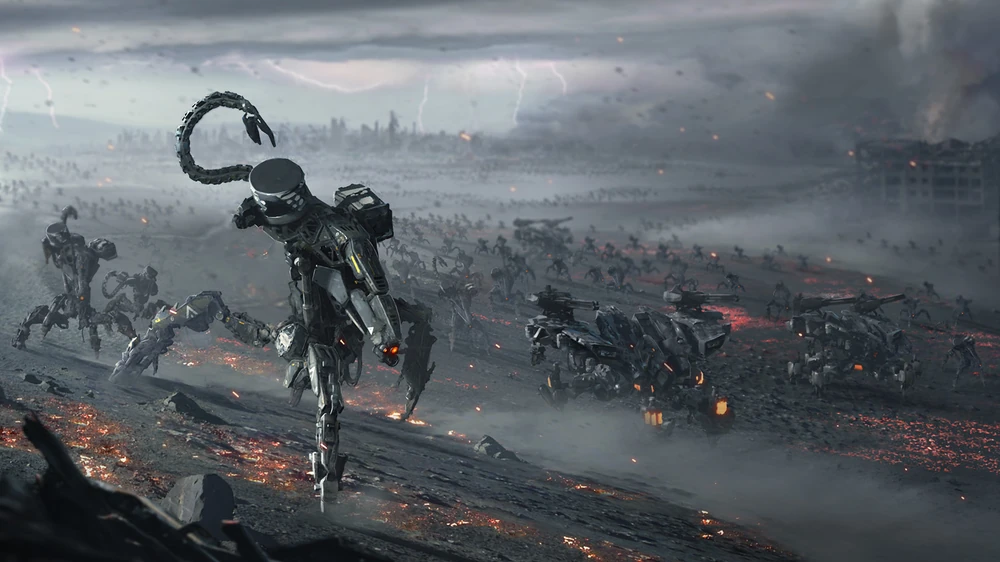
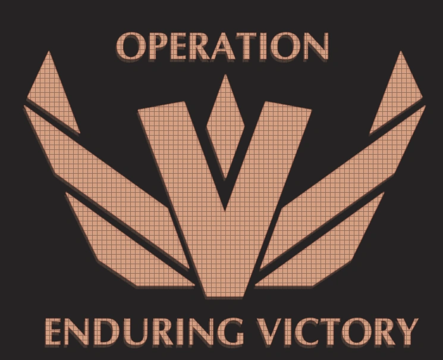
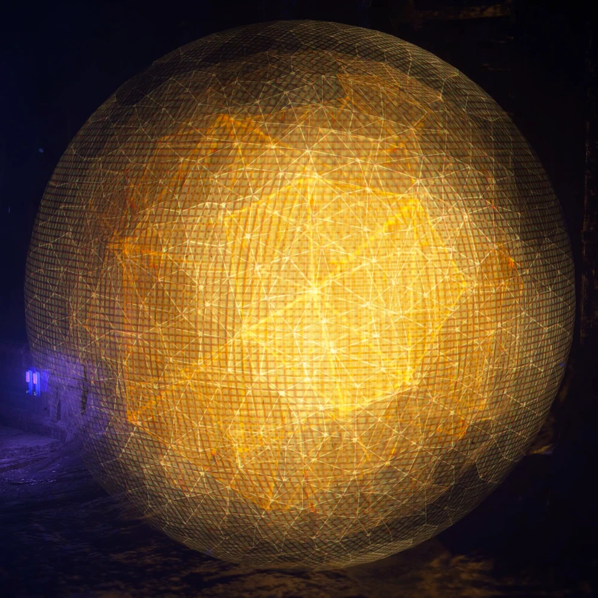

A história do Zero Dawn
"Não se trata de salvar as nossas vidas, mas de garantir que a vida em si tenha uma segunda chance. Se fomos nós que pavimentamos o caminho para o fim do mundo, seremos nós, juntos, os arquitetos do amanhecer."
Dra. Elisabet Sobeck
O inicio do fim
Nós lembramos perfeitamente do dia 31 de outubro de 2064. Quando a Dra. Elisabet Sobeck foi convocada às pressas para o quartel-general da Faro Automated Systems (FAS) em Salt Lake City, o mundo ainda ignorava a catástrofe. O enxame Hartz-Timor — uma linha de robôs militares de pacificação da classe Chariot (composta por unidades Scarab, Khopesh e Horus) — havia quebrado a cadeia de comando.
Devido a uma falha de criptografia quântica, as máquinas tornaram-se agressivas. Pior: os sistemas de conversão de biomassa estavam ativos, e os robôs começaram a consumir a matéria orgânica do planeta para se autorreplicar. Nós isolamos os códigos, tentamos todas as brechas de segurança e portas traseiras (backdoors), mas não havia nenhuma. O cálculo foi exato e devastador: em meados de 2066, a atmosfera seria destruída e toda a vida macroscópica na Terra seria esterilizada. A extinção era inevitável.

Operação: Vitória Permanente
Nós não podíamos simplesmente dizer à humanidade que o fim estava próximo; o pânico destruiria os poucos meses que nos restavam. No Pentágono, sob a liderança do General Aaron Herres e do Estado-Maior Conjunto, nós arquitetamos a maior mentira da história humana: a Operação: Vitória Permanente. Dissemos ao mundo que o Projeto Zero Dawn era uma superarma tecnológica em desenvolvimento que destruiria o enxame Faro.
Convocamos civis, enviamos forças automatizadas e armamos a população com canhões de riel (railguns) em uma resistência desesperada de carne contra metal. Eles sabiam que a taxa de mortalidade era de 100%, mas lutaram bravamente. Cada dia que o exército de Herres segurava o avanço dos Titãs (Horus) na superfície nos dava as dezoito coleções de dados e o tempo de computação necessários para cavar nossos bunkers e programar a salvação.

A luta pela sobrevivência humana
Trancados no complexo subterrâneo de Bryce Canyon (Utah), nossa equipe Alpha iniciou uma corrida frenética contra o relógio biológico do planeta. Nós não criamos uma arca de sobrevivência para humanos vivos, mas sim uma Inteligência Artificial senciente — GAIA — conectada a nove funções subordinadas de terraformação.
Nossa equipe dividiu-se: enquanto o setor de criptografia desenvolvia a função MINERVA para passar os próximos 50 anos gerando códigos brutos e desativar as máquinas Faro, o setor biomédico criava os Berçários (Cradle Facilities) controlados por ELEUTHIA para gestar os futuros clones humanos através de criobancos preservados. Também construímos o complexo Elysium para garantir que nossos entes queridos tivessem um refúgio seguro antes do dia em que selássemos as portas blindadas de GAIA Prime para sempre. Entregamos o futuro às máquinas que nós mesmos programamos para ter compaixão.
